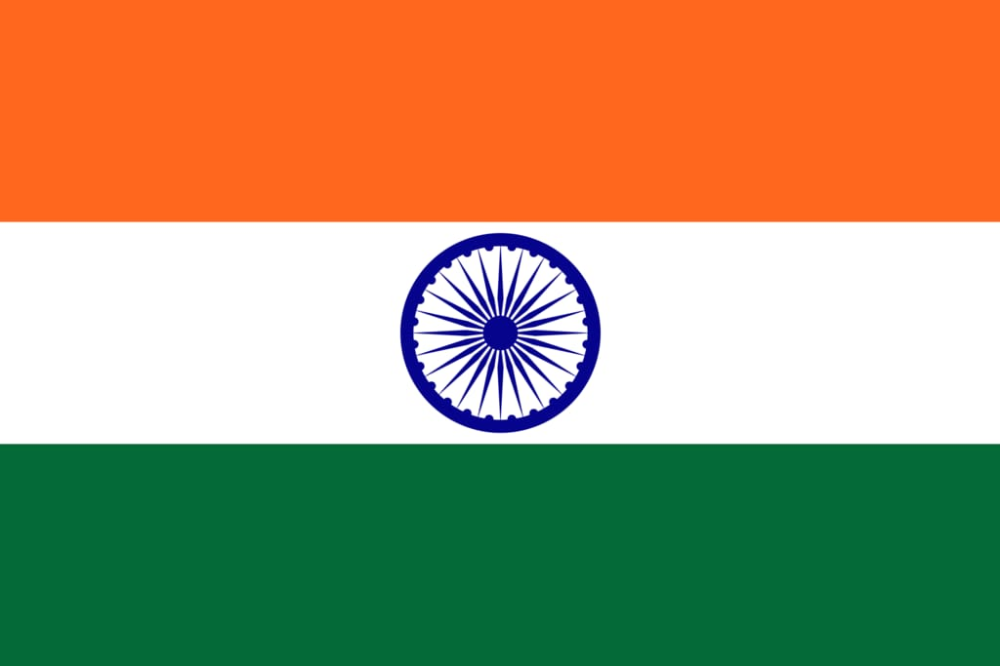
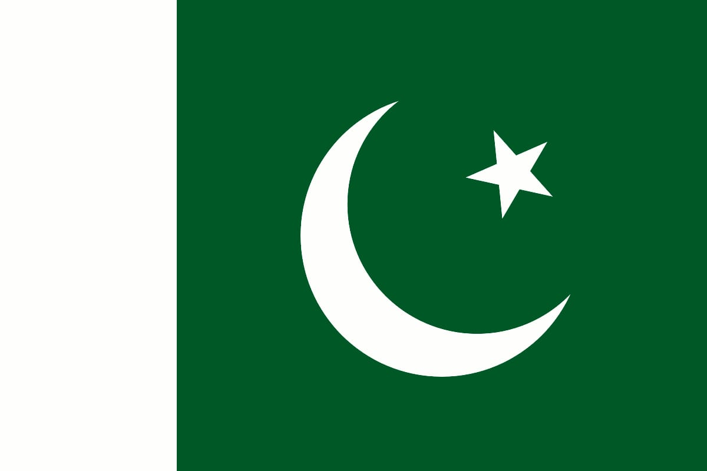
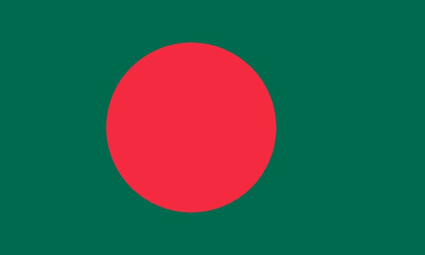

The Indian Cricket League(ICL) was a private cricket league funded by Zee Entertainment Enterprises that operated between 2007 and 2009 in India. Its two seasons included tournaments between four international teams (World XI, India, Pakistan and Bangladesh) and separate tournaments between nine domestic teams notionally located in major Indian cities as well as Lahore, Pakistan and Dhaka, Bangladesh.
| Indian Cricket League | |||
|---|---|---|---|
| Sports | Cricket | ||
| Founded | 2007 | ||
| Ceased | 2009 | ||
| Divisions | 9 | ||
| No. of teams | 9 city teams, 4 international teams | ||
| Country |  | India | |
|  | Pakistan | ||
|  | Bangladesh | ||
| World XI | |||
| Last champion(s) | Lahore Badshahs (2008/09) | ||
The matches were played in the Twenty20 format, and was the first domestic Twenty20 league in India. There was also a planned domestic 50-over tournament, but this did not happen. The ICL lacked the support of the Board of Control for Cricket in India and International Cricket Council, which placed it at a major disadvantage when compared to other cricket competitions.
In 2008 the Board of Control for Cricket in India launched the their own Indian Premier League. ICL was an unsanctioned league. It is dubbed as "rebel league" by Indian media due to its fights with BCCI.
BCCI banned those who involved in ICL by the BCCI and other cricket authorities, led to the league's folding in 2009.
The Indian Premier League (IPL) (also known as the TATA IPL for sponsorship reasons) is a men's Twenty20 (T20) cricket league held annually in India. It is contested by ten teams based in seven cities and three states of India. The league was founded by the Board of Control for Cricket in India (BCCI) in 2007. Brijesh Patel is the incumbent chairman of the IPL. Competition is usually held annually in summer (between March and May) and has an exclusive window in the ICC Future Tours Programme, meaning that international cricket does not take place during that the IPL season.
The IPL is the most popular cricket league in the world, and in 2014 it was ranked sixth by average attendance among all sports leagues.[needs update] In 2010, the IPL became the first sporting event in the world to be broadcast live on YouTube. The brand value of the IPL in 2022 was ₹90,038 crore (US$11 billion). According to BCCI, the 2015 IPL season contributed ₹1,150 crore (US$140 million) to the GDP of the Indian economy. In December 2022, the league became a decacorn valued at $10.9 billion registering a 75% growth in dollar terms since 2020 when it was valued at $6.2 billion, according to a report by consulting firm D & P Advisory.
There have been fifteen seasons of the tournament. The current title holders are the Gujarat Titans, winning the 2022 title in what was their first season.
The 2019 season of the IPL offered a total prize money of ₹50 crore (equivalent to ₹53 crore or US$6.6 million in 2020), with the winning team netting ₹20 crore (equivalent to ₹21 crore or US$2.6 million in 2020). The first and second runners up received ₹12.5 crore (US$1.6 million) and ₹8.75 crore (US$1.1 million), respectively, with the fourth placed team also winning ₹8.75 crore (US$1.1 million). The other teams are not awarded any prize money. The IPL rules mandate that half of the prize money must be distributed among the players.
The IPL has some unique rules which the T20I format does not.
| Team | Debut | Captain | Head Coach | Champion |
|---|---|---|---|---|
| Mumbai Indians | 2008 | Rohit Sharma | Mark Boucher | 2013, 2015, 2017, 2019, 2020 |
| Chennai Super Kings | 2008 | M.S.Dhoni | Stephen Fleming | 2010, 2011, 2018, 2021 |
| Royal Challengers Bangalore | 2008 | Faf du Plessis | Sanjay Bangar | - |
| Kolkata Knight Riders | 2008 | Nitish Rana | Chandrakant Pandit | 2012, 2014 |
| Delhi Capitals | 2008 | David Warner | Ricky Ponting | - |
| Punjab Kings | 2008 | Shikhar Dhawan | Trevor Bayliss | - |
| Rajasthan Royals | 2008 | Sanju Samson | Kumar Sangakkara | 2008 |
| Sunrisers Hyderabad | 2008 | Aiden Markram | Brian Lara | 2016 |
| Gujarat Titans | 2022 | Hardik Pandya | Ashish Nehra | 2022 |
| Lucknow Super Giants | 2022 | K. L. Rahul | Andy Flower | - |
The Orange Cap is awarded to the top run-scorer in the IPL during a season. It is an ongoing competition with the leader wearing the cap throughout the tournament until the final game, with the eventual winner keeping the cap for the season. Latest winner – Jos Buttler – 863 Runs (2022).
The Purple Cap is awarded to the top wicket-taker in the IPL during a season. It is an ongoing competition with the leader wearing the cap throughout the tournament until the final game, with the eventual winner keeping the cap for the season. Latest winner – Yuzvendra Chahal – 27 wickets (2022).
The award was called the "man of the tournament" until the 2012 season. The IPL introduced the Most Valuable Player rating system in 2013, the leader of which would be named the "Most Valuable Player" at the end of the season. Latest winner – Jos Buttler (2022).
The Fair Play Award is given after each season to the team with the best record of fair play. The winner is decided on the basis of the points the umpires give to the teams. After each match, the two on-field umpires, and the third umpire, scores the performance of both teams. Latest winners –Rajasthan Royals.
The award was presented for the "best under-19 player" in 2008 and "best under-23 player" in 2009 and 2010, being called "Under-23 Success of the Tournament". In 2011 and 2012, the award was known as "Rising Star of the Year", while, in 2013, it was called "Best Young Player of the Season". Since 2014, the award has been called the Emerging Player of the Year. In 2016, Mustafizur Rahman of Bangladesh was the first and only foreign player to date to win the Emerging Player of the Year award. Latest winner – Umran Malik (2022).
The award for the most sixes in a season, currently known as Unacademy Let's Crack It Sixes Award for sponsorship reasons, is presented to the batsman who hits the most sixes in a season of the IPL. English batsman Jos Buttler of the Rajasthan Royals won this award in 2022 with 45 sixes in 17 innings.
The league's structure is based on the structure of the IPL. Initially there are five teams, with sides playing against each other in a double round robin format, and the three teams finishing with the most points entering the playoff stages of the competition. The Board plans to increase the number of matches and franchises in future seasons if the league is a success. The first season of the league took place from 4 March to 26 March 2023, and featured 22 matches, all held at Brabourne Stadium and DY Patil Stadium in Mumbai. Tickets were made available free to women during the first season. The league's mascot, Shakti, is a tigress wearing a sky blue cricket uniform.
Investors brought the initial franchise rights in January 2023 through a closed bidding process, raising a total of ₹4,669 crore (US$580 million).
A number of companies responded to the sale of franchise rights which were sold for five years, from 2023 to 2027. Adani Group won the rights to the Ahmedabad franchise for ₹1,289 crore (US$160 million), Indiawin Sports Pvt Ltd, part of Reliance Industries, won the Mumbai franchise for ₹912.99 crore (US$110 million), GMR–JSW Cricket Pvt Ltd won the Delhi franchise for ₹810 crore (US$100 million), Capri Global holdings won the Lucknow franchise for ₹757 crore (US$95 million), and Royal Challengers Sports Pvt Ltd, a subsidiary of alcohol manufacturing company Diageo, won the Bangalore franchise for ₹901 crore (US$110 million).
| Team | City | Debut | Captain | Head Coach |
|---|---|---|---|---|
| Mumbai Indians | Mumbai | 2023 | Harmanpreet Kaur | Charlotte Edwards |
| Delhi Capitals | Delhi | 2023 | Meg Lanning | Jonathan Batty |
| Gujarat Giants | Gujrat | 2023 | Sneh Rana | Rachael Haynes |
| Royal Challengers Bangalore | Bangalore | 2023 | Smriti Mandhana | Ben Sawyer |
| UP Warriorz | Uttar Pradesh | 2023 | Alyssa Healy | Jon Lewis |